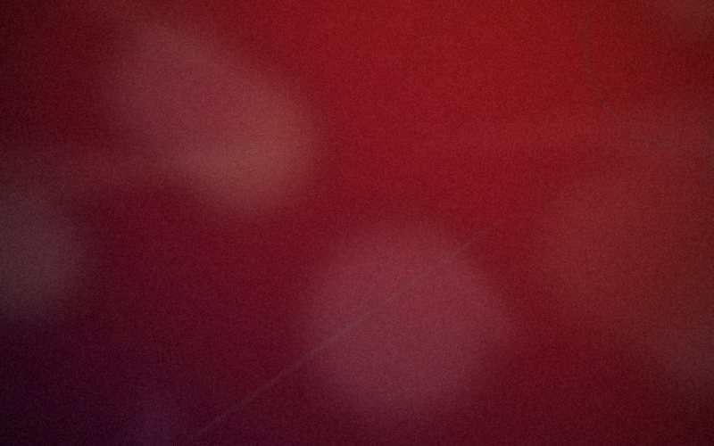

Selezione Ufficiale
Annunciata la Selezione Ufficiale della XXIV edizione del B.A. Film Festival
Sono stati rivelati i titoli che comporranno la Selezione Ufficiale del BAFF 2026: dodici lungometraggi italiani e dieci opere internazionali si contenderanno i premi della XXIV edizione. Una selezione che conferma la vocazione del festival verso un cinema d'autore attento alla realtà e capace di emozionare. La commissione ha visionato oltre quattrocento opere candidate, selezionando i film che meglio rappresentano le nuove tendenze del cinema contemporaneo.